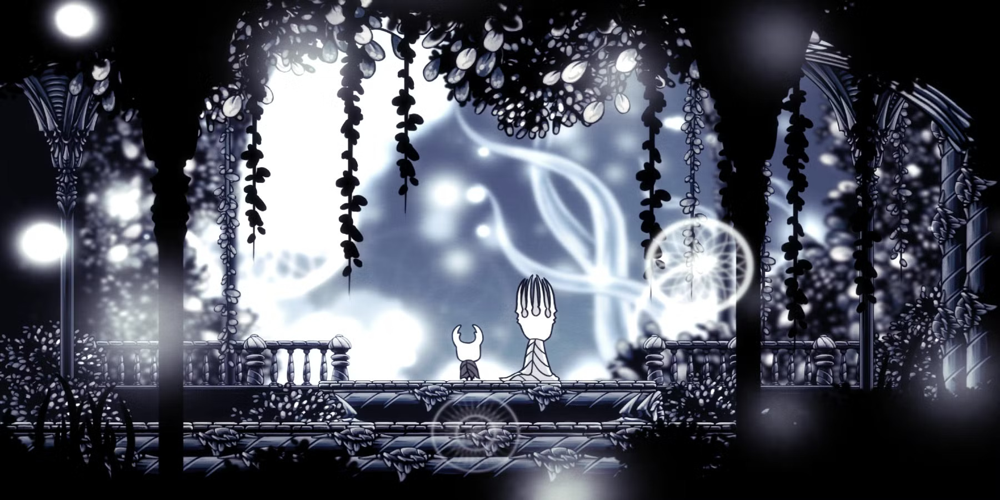
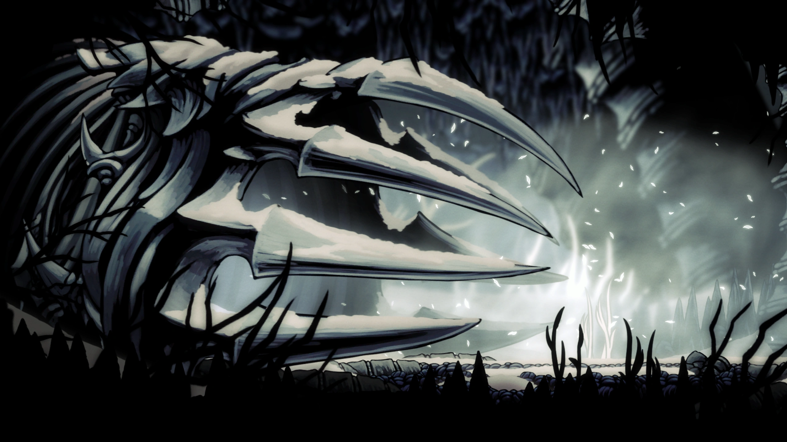

¡Rey Pálido!

El Rey Pálido es el antiguo monarca y fundador del reino de Hallownest. Es un Ser Superior que llegó al reino en su forma original de Wyrm y se metamorfoseó en un insecto pequeño para otorgar inteligencia a los habitantes de las cavernas a cambio de su lealtad.
Originalmente era un Wyrm que murió en los límites del reino (Borde del Reino). De su cáscara desechada nació su forma actual, cuya luz expandió las mentes de los insectos, lo que provocó que olvidaran al Destello (Radiance), la antigua deidad solar que gobernaba antes de su llegada.

La Fundación de una Civilización
Junto a la Dama Blanca, estableció una civilización próspera, construyendo infraestructuras legendarias como la Ciudad de las Lágrimas, los Canales Reales y el Palacio Blanco. Su reinado se basaba en la promesa de un reino eterno, libre de los instintos salvajes que la Radiance controlaba a través de los sueños.
- 🏛️ Capital: Ciudad de las Lágrimas
- ⚔️ Guardia: Los Cinco Caballeros Reales
- 💍 Consorte: La Dama Blanca
- ✨ Poder: Luz Mental / Clarividencia
El Plan de las Vasijas
Para detener la Infección que regresó a través de los sueños, el Rey Pálido llevó a cabo experimentos con el Vacío en el Abismo para crear "Vasijas": seres sin mente ni voluntad capaces de sellar al Destello de manera definitiva.
"Ningún sacrificio es demasiado grande. Sin mente que piense. Sin voluntad que quebrantar. Sin voz para gritar de sufrimiento."
Este mantra define su desesperación por salvar su creación, sacrificando a miles de sus propios hijos (las vasijas) en el proceso de búsqueda del receptáculo perfecto.

El Exilio al Sueño
Al colapsar el reino y darse cuenta de que el sello del Hollow Knight era imperfecto, el Rey Pálido desapareció. Se refugió en el Palacio Blanco, el cual trasladó íntegramente al Reino de los Sueños, custodiado por un Guardián Real fallecido para evitar que cualquier rastro de la Infección lo alcanzara.